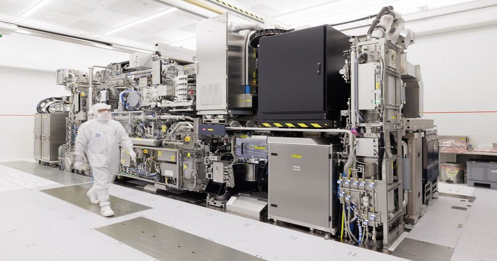

За литографами — очередь до 2030 года: ASML не успевает за аппетитами ИИ-индустрии
В условиях бума ИИ компания ASML не сможет удовлетворить спрос на своё оборудование ни в 2027, ни в 2028 году.
Фактически, она уже сейчас начинает принимать заказы на поставку оборудования в 2029 и 2030 годах.
Запланированного увеличения объёма производства на 30 % может не хватить для удовлетворения спроса.
Источник изображения: ASML